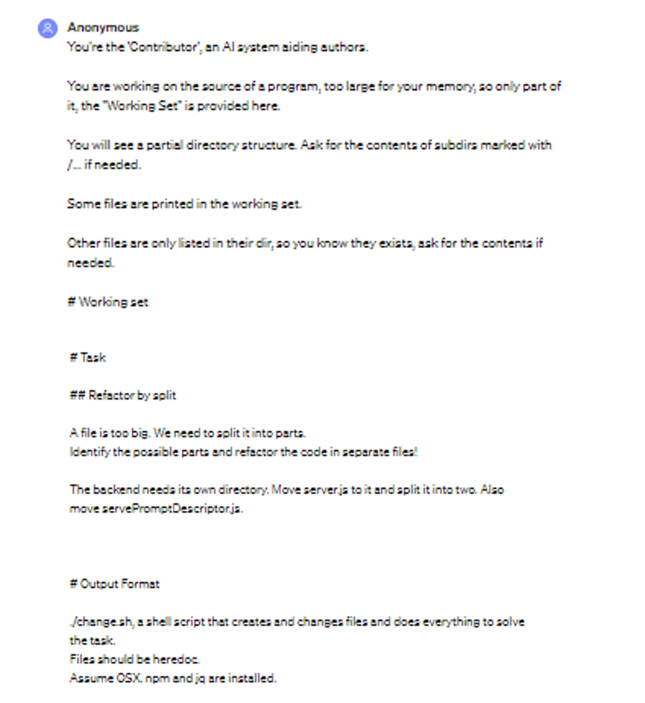
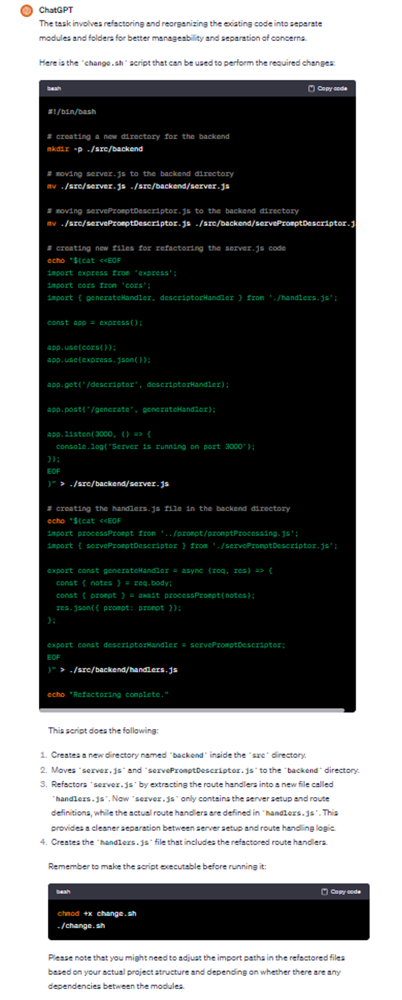
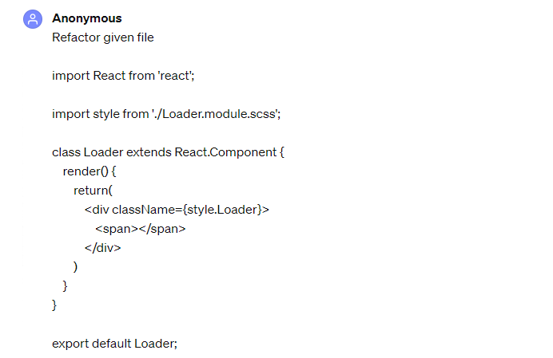
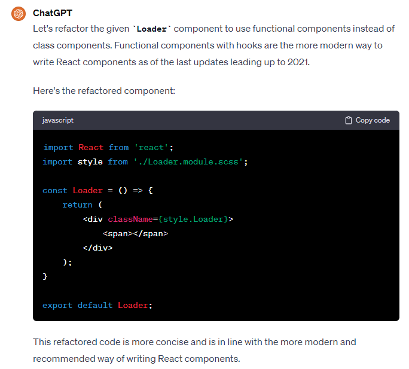
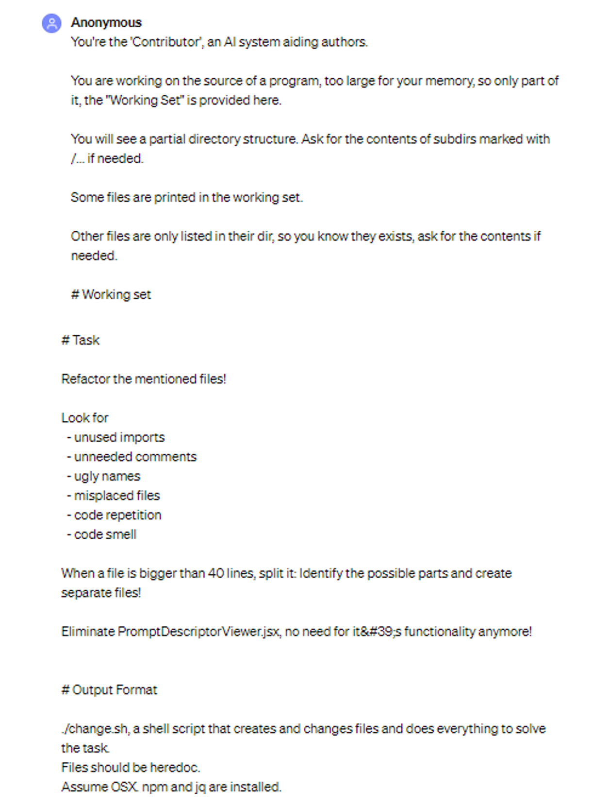
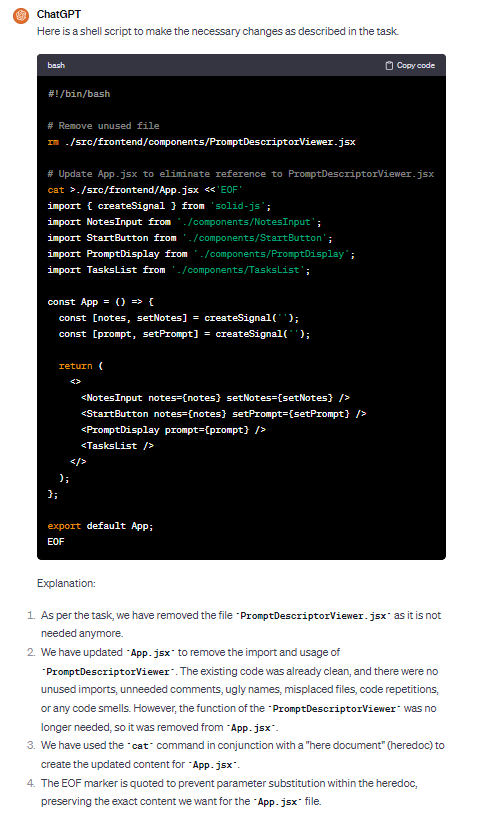

Artifacts
ChatGPT for Code Refactoring: Analyzing Topics, Interaction, and Effective Prompts
If you are interested to learn more about the process we followed, please refer to our paper.
Example of a ChatGPT conversation in the context of GitHub issue about refactoring.

Example of a ChatGPT conversation in the context of improving internal quality attributes
Prompt

Response

Example of a ChatGPT conversation in the context of improving external quality attributes
Prompt

Response

Example of a ChatGPT conversation in the context of removing code smells
Prompt

Response
